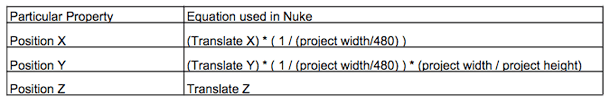
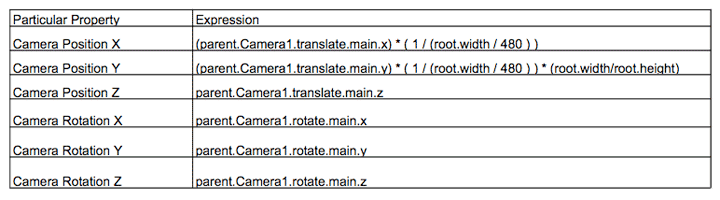
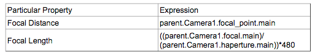
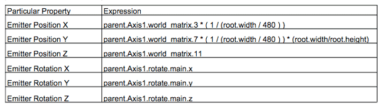
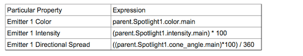
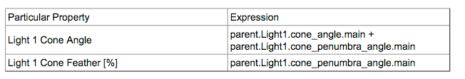
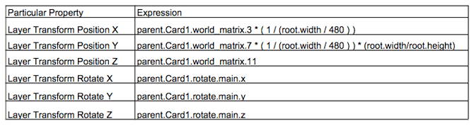

Using Particular with expressions in Nuke's 3D environment
The Particular plug-in does not have direct access to Nuke's 3D elements. Therefore, when selecting nodes to act as Layer Emitters, Floors, Walls and other inputs for Particular, those nodes must be 2D nodes, such as Constants or Read nodes. In order to better integrate Particular into a 3D composite, expressions can be used.
For easy usability, we have created the Particular 3D Gizmo. This editable group of scripts and nodes gives you pre-defined relationships between the Particular plug-in and Nuke 3D nodes. This page gives you interesting and useful information about that relationship.
Overview of the nodes
We recommend using a Camera node when linking 3D nodes to properties in Particular, even if the Camera node is not used in the Nuke project itself. Using a Camera node will make editing other 3D elements easier, particularly if you want to move 3D elements while in the 2D Viewer mode.
The X and Y coordinates that Particular uses are slightly different than those that Nuke uses, since Particular relies on the resolution of your project in making its calculations. When setting up individual properties in Particular to correspond to properties in Nuke's 3D environment (for instance, linking the XYZ translate properties of a Camera node in nuke to the XYZ Camera Position properties of a Particular node), keep this equations in mind (which are used by the Particular 3D Gizmo):

For example, if you wanted to use a Nuke camera node to control the position of the Particular Camera property, you would create a Camera node, and set each Particular property equal to the Camera node's corresponding property. If the Camera were named Camera1, the expressions would look as follows. (Note that 'world_matrix' is used in order to find the location of the camera in world coordinates, to take care of the case where an Axis node might be used to control the camera position.):

Unless you are used to working with expressions, most of the time the best way to set them up is to open both property panes side by side, and Command+drag (Ctrl+drag on Windows and Linux) from the property you are using in the expression to the property which will be using the expression (for instance, from Camera node translate x to Particular node Camera Position x). Then, right clicking in the Particular property and selecting 'Edit Expression' allows you to add more to the expression, for instance the equations using the project width and height in the X and Y coordinates.
There are also times when linking more than just position and rotation properties is recommended. For instance, continuing with the camera example, Focal Length and Focal Distance are elements that can be easily controlled by the Nuke Camera node with expressions. The focal distance can be linked as is, with no math required. However, Focal Length is a bit more complicated.
Focal Length is akin to the 'Zoom' property in After Effects, while Nuke uses a Focal Length property more like that of a real camera. Nuke also has 'Horiz Aperture' and 'Vert Aperture' properties that can affect the angle of view of the Nuke camera. These must be taken into account when writing an expression. By dividing the Nuke Camera node's focal length by its Horiz Aperture, and multiplying by the width of the project, the Particular camera will line up with the Nuke camera.

Note that the name of the Camera node property used in expression is not necessarily the name of the property that is displayed in the Property pane. Hovering the mouse over the property value box in the Property pane will show you the name to use in the expressions.
Now that you have a camera set up, you can set up other elements.
Using 3D Axis node for Emitters
For most emitters, it is recommended that you use Nuke's Axis nodes. You can set these up in the same way that you did the Nuke Camera and linked it to the Particular camera properties. For instance, if you are using a point emitter, and you have an Axis node named Axis1, you can use these expressions to link them:

This same set of expressions can be used for Multi-Emitters, with separate Nuke Axis nodes for each Emitter.
Alternatively, you could use a Nuke Spot Light node to control the emitters. This would come in especially useful for Multi-Emitters, or an emitter that is directional, because a Nuke Spot Light node has indicators for the direction the light is pointing.
Nuke Light nodes also have colors, angles, and intensities, which can be linked to corresponding properties for Multi-Emitters in Particular.
Below is a table with expressions, assuming a Light named Spotlight1:

In Particular, the maximum Intensity for an emitter or a light is 100%. Nuke uses a different system, where 1 is equal to 100%, and greater amounts are possible. In this case, the expression for Intensity will still work, but creating a Nuke light with an intensity greater than 1 will show no difference in Particular than a light with intensity equal to 1.
Directional Spread is a percentage in Particular, while Cone Angle for Lights in Nuke is a number between 0 and 360 corresponding to degrees in an angle. While the above expression changes the Nuke light cone angle to a percentage, some changes may be desired to give a more satisfactory output.
Also note, if using lights to represent emitters in a scene that will be using 3D compositing and a ScanlineRender node, it is recommended that you turn off final render of the lights linked to the emitters, to make sure that it does not interfere with the composite.
Using Shading Lights and Shadowlets
Shading Lights and Shadowlets can be set up in a similar manner to Multi-Emitters connected to Spotlights.
However, Shading Lights in particular have Cone Angle and Cone Feather properties, rather than a Directional Spread property.
If you are using a Point light in Particular, you can use a Point light in Nuke. Also note that Nuke has a light type that allows you to change between Spot and Point (and several other options). In some cases, this might be your best choice for linking a Nuke 3D Light to Particular's shading lights.
This table covers the Expressions recommended for linking lights that differ from the other expressions already discussed (for instance, the non-Position/Rotation properties), assuming a Light named 'Light1':

Note that Nuke lets the falloff go above 100, but Particular's Cone Feather will not be greater than 100%. The Shadowlet properties for Particular can be set up similarly. It might be useful to use the same 3D light for the Shadowlet as you do for the key light of the scene and attached to Particular. For instance, one light can control both Light 1 in Particular and the Shadowlet
When using 3D lights to represent Particular lights, it can be useful to use these same lights to light a Nuke 3D environment. This is just one example of how you can integrate Particular into Nuke and a 3D composite.
Using Layer Emitters
Layer Emitters are a special case, and in order to see them in a 3D viewer, it takes slightly more set up.
Particular nodes accept 2D nodes, such as Read and Constant nodes, as inputs. In order to to see the 2D node in Nuke's 3D environment, a 3D Card node can be added.
First, create your 2D node that will be used as the layer emitter. Connect this node to the Emitter input arrow of the Particular node. Create a 3D card node, and connect the 2D node to the card node as well. At this point, the 2D node should have two outputs, one connected to the Particular Emitter input and one connected to the Card node. Now, using the previous Position/Rotation expressions from the Emitter position, slightly altered, connect the Translate and Rotate properties of the Card node to the Position/Rotate properties of the Layer Transform tab on the Particular node.

The Floor, Wall, and Obstruction properties and nodes should be set up the same way. For instance, connect a 2D node to the Floor input on Particular, then connect it to a Card, and link the Card properties to the Particular Floor transform properties.
Using ScanlineRender node
Once you have a 3D scene composite set up, you most likely have a ScanlineRender node. If not, create one. The ScanlineRender node puts out a 2D image that can be used by Particular.
The following example gives you a different way to use Particular than the gizmo. While the Particular gizmo places the particles on a card in 3D space, you can also choose to place the particles directly on a finished composite, and use the Z-buffer, floor, wall, and obstruction properties to put the particles in your scene.
Connect the output of the ScanlineRender node to the Source input arrow of your Particular node. Link the elements of the 3D scene to the corresponding Particular properties, as discussed earlier. The Camera connected to the ScanlineRender node is the most important in this case.
Particular has a Z-Buffer input that is generally used for integrating Particular into images rendered in a 3D program. You can use this to use Nuke's depth in conjunction with the 3D system Particular uses.
Add a ChannelShuffle node to your node graph. Connect your ScanlineRender node to the ChannelShuffle node, so that the ScanlineRender node has two outputs, one into the ChannelShuffle node, and the other into the Source input of the Particular node.
Next, select the 'in 1' drop down property of the ChannelShuffle node and set it to 'depth'. This is found under the 'other layers' option. Make sure that your ScanlineRender node has the Z-Buffer box checked, so that it has a depth channel. Now, if you preview the output of the ChannelShuffle node, you should see a black and white image that represents the depth, or Z-buffer, of the ScanlineRender node. Connect the output of the ChannelShuffle node to the Z-buffer input on the Particular node. It may be necessary to move some of the input arrows obscuring the Z-buffer input. The easiest way to do this is to connect the arrows to a constant node that has been disabled. Particular will treat the constant node as if nothing is there, and it will not interfere with your output.
You should now have a ScanlineRender node that is used as the Source input for Particular. Setting the Render Transfer mode for Particular to 'Normal' will place the particles directly on top of the output of the ScanlineRender node. The use of the Z-buffer may not be seen yet. If it appears that the particles from Particular are all visible and some are not obscured by geometry you have in your 3D scene, you can adjust the Z at Black property for Particular until you have a desired result.
The ScanlineRender node depth channel should have a black background, while objects very near the camera will be white or near white. Ideally, you probably want no particles to be blocked that appear over the black parts of the background, and all particles blocked where the depth channel is white. This will give the appearance that the Particles are obscured by scene geometry close to the Camera while the particles obscure geometry further from the camera. If you have problems with your final output, such as with Lights or Card nodes, verify that you have the correct 3D nodes set to render or not. While having all visible in the preview is probably useful, there can be times when you do not want them to be visible in the final output. For instance, if you have a layer emitter emitting particles, you may not want the card showing the 2D image to be visible as well as the particles. You may only want the particles. Also, using 3D lights to represent emitters may cause more lighting than wanted or necessary in your 3D composite.